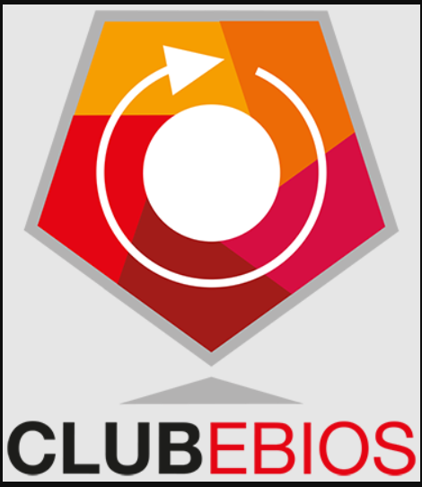

Mes Compétences
Voici un aperçu des compétences techniques que j’ai développées en systèmes, réseaux et virtualisation au cours de ma formation, et de mes stages.
Administration systèmes
Installation, configuration et gestion des utilisateurs dans un environnement Windows
Utilisation des commandes Linux et gestion des services système
Réseaux
Simulation et configuration de réseaux (routeurs, switchs)
Mise en place de VLAN et configuration de routage basique
Virtualisation
Création et gestion de machines virtuelles (Windows et Linux)
Développement & bases de données
Création de bases de données, requêtes SQL et développement d’un projet CRUD
Compétences en cours d'acquisition
- Active Directory (mise en place et gestion d’un domaine)
- DHCP / DNS (configuration de services réseau)
- Sécurisation des systèmes et réseaux
- Administration Linux avancée
Certification

MOOC EBIOS Risk Manager
Certification EBIOS Risk Manager – “Introduction à la méthode EBIOS Risk Manager”.
Formation sur l’analyse et la gestion des risques pour la cybersécurité (EBIOS). Acquisition de compétences sur la cartographie des risques, le traitement des menaces et la gouvernance de la sécurité.
Certifié